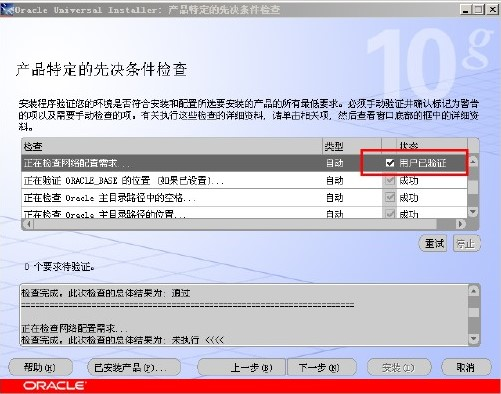
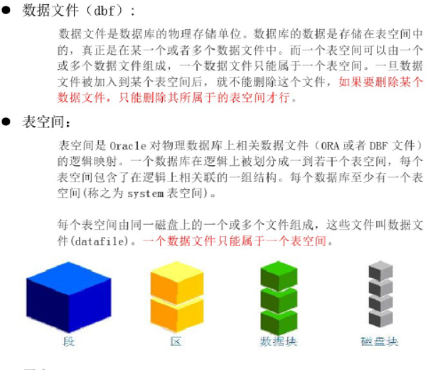
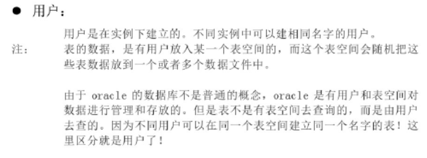
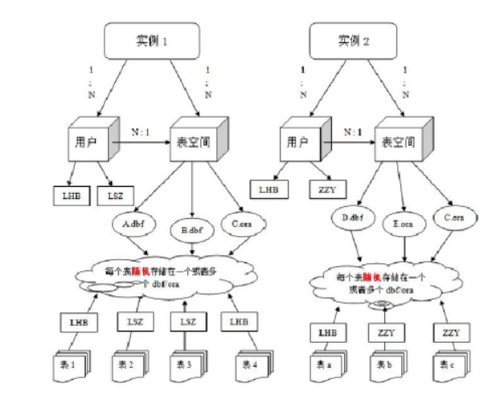
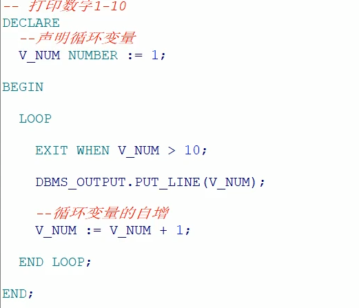
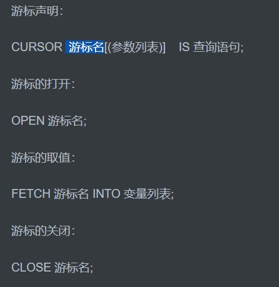
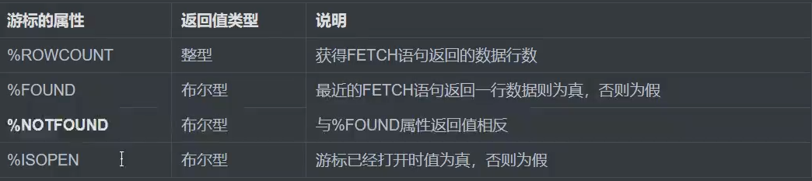
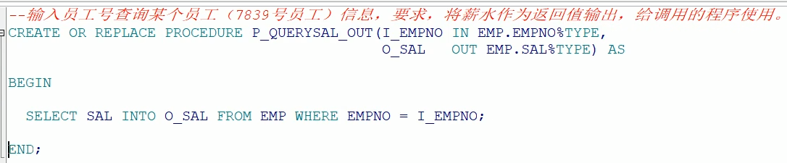
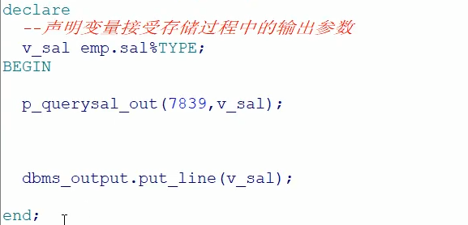
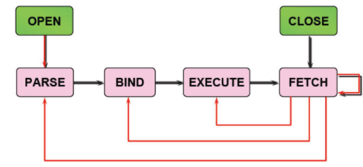

一：Oracle的基本概念与安装
1：简介
ORACLE数据库系统是美国ORACLE公司（甲骨文）提供的以分布式数据库为核心的一组软件产品，是目前最流行B/S体系结构的数据库之一。ORACLE数据库是目前世界上使用最为广泛的数据库管理系统，作为一个通用的数据库系统，它具有完整的数据管理功能；作为一个关系数据库，它是一个完备关系的产品；作为分布式数据库它实现了分布式处理功能。但它的所有知识，只要在一种机型上学习了ORACLE知识，便能在各种类型的机器上使用它。
2：服务端安装
1．解压。oracle数据库安装包，如果是win7或者win8系统右键点击setupexe选择兼容性，以XP方式，并且以管理员方式运行，以及其他所有用户都按着此规则如图




3：自带客户端工具的安装
4：PLSQL工具的安装
（1）设置tools->preferences->connection中sqlplus路径

（2）确认服务器上的tnsnames.ora和linstener中的host为虚拟机ip地址

（3）将服务器中tnsnames.ora文件拷贝到本地路径无需修改，如果是拷贝发的资料需要修改文件中远程orcl服务器的ip地址

（4）系统变量中设置TNS_ADMIN变量为tnsnames.ora文件目录

8.解决中文乱码问题
查询select userenv('language') from dual;--AMERICAN_AMERICA.ZHS16GBK
查询select * from V$NLS_PARAMETERS;
在系统变量中设置NLS_LANG=AMERICAN_AMERICA.ZHS16GBK
重新启动PLSQL
5：基本使用
解锁scott用户设置密码为tiger
OracleDBConsoleorcl --可以不启动,用于管理Oracle的企业管理器的服务.
OracleJobSchedulerORCL --通常不启动,用于定期操作任务的服务
OracleOraDb10g_home1iSQL*Plus --可以不启动,isqlplus服务,用网页执行sql,11g已经取消这个功能
OracleOraDb10g_home1TNSListener --必须启动,这是临听,用于远程客户端连接你的Oracle
OracleServiceORCL --必须启动,这是Oracle数据库的服务
二：Oracle体系结构
1：基本概念
实例




2：使用DDL语句管理表
--创建表空间
create tablespace xqc
--删除表空间
drop tablespace xqc
--创建用户
create user xqc
identified by xqc
default tablespace xqc
--给用户授权
--oracle中常见角色
connect --连接角色，基本角色
Resource--开发者角色
Dba——超级管理员角色
--给xqc授予dba角色
grant dba to xqc
--切换到xqc用户下
--修改列类型
alter table person modify gender char(1)
--char为固定长度
--修改列名称
alter table person drop colum sex;
序列的使用
--默认重1开始，依次递增，主要给主键赋值使用
create sequence s_person
dual:虚表，只为了补全语法，没有任何意义
select s_person..currval from dual;
Scott用户，密码为tiger
--解锁scott用户
alter user scott account unlock;
--解锁scoott用户的密码(也可以用来重置密码)
alter user scott identified by tiger
--切换到scoott用户，默认有四张表
三：基本语法
sql的基本语法参考mysql的，这里着重写oracle与mysql不同的地方
1：Select
2：过滤与排序
1：多表查询
1：外连接
2：子查询
3：集合运算
四：函数
1：通用函数（Oracle独有）
1.1：NVL
NVL(列|默认的代替值)
如果oracle的列为空那么显示第二个参数的值，如果列的值不为空，则显示列本来的值。
--算出工资+奖金的总和，但是奖金有空值，如果null和任意数字做算术运算，结果都是null
lect e.sal * 12 +e.comm from emp e;
select e.sal * 12 + nvl(e.comm,0) from emp e;
1.2：DECODE多数值判断
DECODE(列,匹配内容1，显示内容1，匹配内容2，显示内容2,未匹配内容的默认值);
根据不同的结果在输出的时候进行一个数据的转换
call函数
2：单行函数
单行函数：作用于一行，返回一个值
多行函数：作用于多行，返回一个值
是放在SQL中还是放在Java中处理？？
2.1：trunc直接截取小数
TRUNC(列|数字 [,保留小数位])
2.2：字符函数
--转大写
select upper('yes') from dual;--YES
--转小写
select lower('YES') from dual;--yes
length（），
replace（），
substr()
2.3：数值函数
--四舍五入，后边参数表示保留的位数
select round(26.16,1) from dual;
trunc（），
mod（）
2.4：日期函数（不同于mysql）
--查询emp表中所有员工入职距离现在几天
select sysdate - e.hiredate from emp e;
--算出明天此刻
select sysdate+1 from dual;
add_months(),
--查询距离现在几月
select months_between(sysdate,e.hiredate) from emp e;
--查询距离现在几年
select moths_between(sysdate,e.hiredate)/12 from emp e;
--查询距离现在几周
select round((sysdate-e.hiredate)/7) from emp e;
--转换函数
select to_char(sysdate,'fm yyyy-mm-dd hh24:mi:ss') from dual;
--字符串转日期
select to_date('2018-6-7 16:39:50','fm yyyy-mm-dd hh24:mi:ss') from dual;
转换函数
通用函数
nvl(),
nvl2()
2：多行函数
2.1：分页
--表工资倒序排序后，每页五条记录，查询第二页
select * from (
select rownum rn ,e.* from(
select * from emp order by sal desc
)e where rownum<11
)where rn >5
Mybatis的PageHelper插件也是这个原理,在最外层过滤后添加语句
select * from(
……
)where rownum <=20


2.2：视图


索引


五：事务
Oracle默认不自动提交，用户需手动提交，写commit或点击commit按钮，而mysql默认自动提交。
五：PLSQL的使用
程序结构，变量，流程控制，游标
指在SQL命令语言中增加了过程处理语句（如分支，循环等）
PLSQL新建TestWindow
PLSQL不区分大小写
5.1：程序结构
declare
--声明本地变量，游标
begin
--执行语句
--异常处理
end;
1：输出helloWorld
declare
--声明本地变量，游标
begin
--java:System.out.println("Hello World");
DBMS_OUTPUT.PUT_LINE('hello world');
end;
cmd输入sqlplus以scott登录密码为tiger
默认输出关闭，设置打开，以/结束

5.2：变量
变量名 变量类型（变量长度） 例如：v_name varchar2(20)
1）普通变量
直接赋值语句：=
语句赋值，使用select ……into……赋值
例：
--打印人员信息
DECLARE
--姓名
V_NAME VARCHAR2(20) :='zhangsan';
--薪水
V_SAL NUMBER;
--地址
V_ADDR VARCHAR2(200);
BEGIN
--直接赋值
V_SAL:=1580;
--语句赋值
SELECT '上海' INTO V_ADDR FROM DUAL;
--打印输出
DBMS_OUTPUT.PUT_LINE('姓名：'||V_NAME||',薪水'||V_SAL||',地址：'||V_ADDR);
END;
2）引用型变量
--查询emp表中员工信息
DECLARE
--姓名，不再直接使用类型，而是根据emp表中字段的变化而变化
V_NAME EMP.ENAME%TYPE :='zhangsan';
--薪水,同理
V_SAL EMP.SAL%TYPE;
BEGIN
--查询表中的姓名和薪水并赋值给变量
SELECT ENAME SAL INTO V_NAME,V_SAL FROM EMP WHERE EMPNO = 7839;
--打印输出
DBMS_OUTPUT.PUT_LINE('姓名：'||V_NAME||',薪水'||V_SAL);
END;
3）记录型变量
接收表中一整行记录，相当于Java中的一个对象
语法：变量名称 表名%ROWTYPE 例如V_EMP EMP%ROWTYPE
--查询emp表中员工信息
DECLARE
--记录型变量
v_emp emp%ROWTYPE;
BEGIN
--查询表中的姓名和薪水并赋值给变量
SELECT * INTO EMP FROM EMP WHERE EMPNO = 7839;
--打印输出
DBMS_OUTPUT.PUT_LINE('姓名：'||EMP.ENAME||',薪水'||EMP.SAL);
END;
5.3：流程控制
1）条件分支
语法：

2）循环
语法：

例：

5.4：游标
用于存储一个查询返回的多行数据（结果集，类似于Java的jdbc连接返回的ResultSet集合）通过遍历游标，可以逐行访问处理该结果集的数据
使用
声明——>打开——>读取——>关闭
1）语法

2）游标的属性

3）例


4）带参数的游标
--声明时修改
CURSOR c_emp(v_deptno emp.deptno%TYPE) IS ENAME,SAL FROM EMP WHERE deptno = v_deptno;
--打开时修改,传入参数
OPEN c_emp(10);
七：存储过程procedure
为了特定的业务功能，会向数据库进行多次连接关闭（连接关闭最耗费资源）需要对数据库进行多次IO读写，性能很低，
官方建议：能放在数据库中的就不要放到程序中，可能出错，而且数据库可以日志恢复
但是（维护可就难了）
语法

7.1：不带参数的
1：创建存储过程
CREATE OR REPLACE PROCEDURE p_hello IS
BEGIN
DBMS_OUTPUT.PUT_LINE('hello world');
END P_HELLO;
2：使用
BEGIN
--直接输入调用存储过程的名称
p_hello;
END P_HELLO;
在sqlplus中
注意：
is和as是可以互用的
过程中没有declare关键字，declare用在语句块中
7.2：带参数的存储过程
有输入参数和输出参数之分

使用
7.3：带输出参数的


7.4：Java执行存储过程
Connection对象
1）传统方式
//1,加载驱动
Class.forName("oracle.jdbc.driver.OracleDriver");
//2，获取连接对象
String url = "jdbc:oracle:thin:@localhost:1521:xe";
String user = "scott";
String password = "tiger";
Connection conn = DriverManager.getConnection(url,user,password);
//3：获取语句对象
String sql = "{call p_querysal_out(?,?)}";
CallableStatement call = conn.prepareCall(sql);
//4:设置输出参数
call.setInt(1,7839);
//5:注册输出参数
call.registerOutParameter(2,OracleTypes.DOUBLE);
//6:执行存储过程
call.execute();
//7:获取输出参数
double sal =call.getDouble(2);
System.out.println(sal);
//8.释放资源
call.close();
conn.close();

七：触发器
六：常用SQL语句
与mysql的区别
1：
mysql以表级锁为主，对资源锁定的粒度很大，虽然InnoDB引擎的表可以用行级锁，但这个行级锁的机制依赖于表的索引，如果表没有索引，或者sql语句没有使用索引，那么仍然使用表级锁。
oracle使用行级锁，对资源锁定的粒度要小很多，只是锁定sql需要的资源，并且加锁是在数据库中的数据行上，不依赖与索引。所以oracle对并发性的支持要好很多。
八：优化
执行过程：

执行计划
执行计划是一条查询语句在Oracle中执行过程或者访问路径的描述.
查看执行计划：PLSQL中按F5

基数：返回的结果集行数
字节：执行该步骤后返回的字节数
耗费(cust),CPU耗费：Oracle估计的该步骤的执行成本，用于说明SQL执行的代价，理论上越小越好.
执行顺序：根据缩进来判断，缩进最多的最先执行(缩进相同时，最上面的最先执行)
表的访问方式
- TABLE ACCESS FULL(全表扫描)
Oracle会读取表中的所有行，并检查是否满足where语句中条件；
使用建议：数据量太大的表不建议全表扫描
- TABLE ACCESS BY ROWID(通过rowid的表存取)
ROWID的解释：oracle会自动加在表的每一行的最后一列伪列，表中并不会物理存储ROWID的值，一旦一行数据插入后，则其对应的ROWID在该行的生命周期内是唯一的，即使发生行迁移，该行的ROWID值也不变。
- TABLE ACCESS BY INDEX SCAN(索引扫描)
在索引块中即存储每个索引的键值，也存储具有该键值所对的ROWID.
索引的扫描分两步：首先是找到索引所对的ROWID，其次通过ROWID读取改行数据
索引扫描又分五种：
INDEX UNIQUE SCAN（索引唯一扫描）
INDEX RANGE SCAN（索引范围扫描）
INDEX FULL SCAN（索引全扫描）
INDEX FAST FULL SCAN（索引快速扫描）
INDEX SKIP SCAN（索引跳跃扫描）
SQL语句处理过程

1.在共享池中查找SQL语句
2.检查语法
3.检查语义和相关的权限
4.合并(MERGE)视图定义和子查询
5.确定执行计划
优化
优化法则——漏斗法则

优化规则：
选择记录少的作为基表
用where替换Having
用in代替or